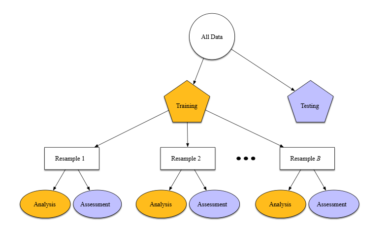

Predicting breast cancer recurrence events using random forests
Introduction
During the “Data Science for biology 2” course every student has the opportunity to learn a new skill for their portfolio. I have decided to introduce myself into “Machine Learning”. I haven chosen machine learning, because over the past decade it has become an important skill in DataScience. Implementing algorithms to predict medical outcomes, using available data sets, is important for early medical diagnoses. Furthermore machine learning makes it possible to analyze more factors and relations within the data at once. This can be highly beneficial while working with large data sets within the field of Life Sciences.
Goal
At the end of this course I want to have created an algorithm able to predict the recurrence of breast cancer using the breast-cancer data set. The algorithm will use the R package “tidymodels” for machine learning.
Data
This breast cancer domain was obtained from the University Medical Centre, Institute of Oncology, Ljubljana, Yugoslavia. Thanks go to M. Zwitter and M. Soklic for providing the data. Matjaz Zwitter (1988)
The table consist of the following variables:
Class: no-recurrence-events, recurrence-events
age: 10-19, 20-29, 30-39, 40-49, 50-59, 60-69, 70-79, 80-89, 90-99.
menopause: lt40, ge40, premeno.
tumor-size: 0-4, 5-9, 10-14, 15-19, 20-24, 25-29, 30-34, 35-39, 40-44, 45-49, 50-54, 55-59.
inv-nodes: 0-2, 3-5, 6-8, 9-11, 12-14, 15-17, 18-20, 21-23, 24-26, 27-29, 30-32, 33-35, 36-39.
node-caps: yes, no.
deg-malig: 1, 2, 3.
breast: left, right.
breast-quad: left-up, left-low, right-up, right-low, central.
irradiat: yes, no.
There are a total of 286 instances from which 201 no-recurrence-events and 85 recurrence-events.
Planning
I’ll spend 30 hours across 4 days on this skill across 2 weeks
Week 1: - Day 1: Delving into the get started guide from tidymodels - Day 2: Delving into the get started guide from tidymodels
Week 2: - Day 3: Apply the learned skills on the breast-cancer data set to predict the recurrence of breast cancer. - Day 4: Extension of past days
Dataset
library(gt)
library(reactable)
# loading in data
bcData <- read.csv(
here::here(
"data",
"breast-cancer.data"
),
header = FALSE, # dataset does not contain column names
col.names = c("class", "age", "menopause", "tumor_size", "inv_nodes", "node_caps", "deg_malig", "breast", "breast_quad", "irradiat") # setting column names
)
# presenting data in table form
reactable(
bcData,
filterable = TRUE,
compact = TRUE,
bordered = TRUE,
defaultPageSize = 5
)Data Wrangling
## 'data.frame': 286 obs. of 10 variables:
## $ class : chr "no-recurrence-events" "no-recurrence-events" "no-recurrence-events" "no-recurrence-events" ...
## $ age : chr "30-39" "40-49" "40-49" "60-69" ...
## $ menopause : chr "premeno" "premeno" "premeno" "ge40" ...
## $ tumor_size : chr "30-34" "20-24" "20-24" "15-19" ...
## $ inv_nodes : chr "0-2" "0-2" "0-2" "0-2" ...
## $ node_caps : chr "no" "no" "no" "no" ...
## $ deg_malig : int 3 2 2 2 2 2 2 1 2 2 ...
## $ breast : chr "left" "right" "left" "right" ...
## $ breast_quad: chr "left_low" "right_up" "left_low" "left_up" ...
## $ irradiat : chr "no" "no" "no" "no" ...The breast cancer dataset had 10 columns and 286 rows. The next step was correcting the variable types to factors and renaming non-recurrence-events to NRE and recurrence events to RE.
# changing type to factor
bcData$class <- factor(bcData$class, levels = unique(bcData$class))
bcData$age <- factor(bcData$age, levels = unique(bcData$age))
bcData$menopause <- factor(bcData$menopause, levels = unique(bcData$menopause))
bcData$tumor_size <- factor(bcData$tumor_size, levels = unique(bcData$tumor_size))
bcData$inv_nodes <- factor(bcData$inv_nodes, levels = unique(bcData$inv_nodes))
bcData$node_caps <- factor(bcData$node_caps, levels = unique(bcData$node_caps))
bcData$deg_malig <- factor(bcData$deg_malig, levels = unique(bcData$deg_malig))
bcData$breast <- factor(bcData$breast, levels = unique(bcData$breast))
bcData$breast_quad <- factor(bcData$breast_quad, levels = unique(bcData$breast_quad))
bcData$irradiat <- factor(bcData$irradiat, levels = unique(bcData$irradiat))
# renaming values in class column
bcData$class <- factor(bcData$class, levels = c("no-recurrence-events", "recurrence-events"), labels = c("NRE", "RE"))
# using str to inspect the changed variables
str(bcData)## 'data.frame': 286 obs. of 10 variables:
## $ class : Factor w/ 2 levels "NRE","RE": 1 1 1 1 1 1 1 1 1 1 ...
## $ age : Factor w/ 6 levels "30-39","40-49",..: 1 2 2 3 2 3 4 3 2 2 ...
## $ menopause : Factor w/ 3 levels "premeno","ge40",..: 1 1 1 2 1 2 1 2 1 1 ...
## $ tumor_size : Factor w/ 11 levels "30-34","20-24",..: 1 2 2 3 4 3 5 2 6 2 ...
## $ inv_nodes : Factor w/ 7 levels "0-2","6-8","9-11",..: 1 1 1 1 1 1 1 1 1 1 ...
## $ node_caps : Factor w/ 3 levels "no","yes","?": 1 1 1 1 1 1 1 1 1 1 ...
## $ deg_malig : Factor w/ 3 levels "3","2","1": 1 2 2 2 2 2 2 3 2 2 ...
## $ breast : Factor w/ 2 levels "left","right": 1 2 1 2 2 1 1 1 1 2 ...
## $ breast_quad: Factor w/ 6 levels "left_low","right_up",..: 1 2 1 3 4 1 1 1 1 3 ...
## $ irradiat : Factor w/ 2 levels "no","yes": 1 1 1 1 1 1 1 1 1 1 ...Splitting the data
After checking the variables the data must be split into a training set and a test set. The test set must be different from the training set to avoid the model from overfitting. Overfitting means that the machine learning model is too well trained on memorizing its own training data that it can not accurately predict data outside of its training data. There are many ways to prevent overfitting. Examples are early stopping, feature selecting by excluding irralevent columns from the dataset, using more data to train on, data augmentation by adding noisy data within the dataset, Regularization by giving a penalty to parameters with large coefficients, ensamble methods by creating random samples in the training set to train them individually. This however comes with its own downside as this might cause underfitting. Underfitting is a term used when the model is not trained well enough on the training data to make accurate predictions outside of the training data. “What Is Overfitting? IBM” (2021); “Tidymodels - Welcome!” (n.d.)
# split data
library(tidymodels)
set.seed(2024)
bcData_split <- initial_split(bcData, prop = 0.7, strata = class)The data gets split randomly so for the sake of reproducibility a seed is set. The function initial_split takes in the breast cancer dataset. Prop is used to specify the data to be split into 70% training data and 30% test data. Strata ensures that even though the data is split randomly both the training and test set will have the roughly the same percentage of no recurrence events and recurrence events. “Tidymodels - Welcome!” (n.d.)
# store data into training and testing
bcData_train <- training(bcData_split)
bcData_test <- testing(bcData_split)Using the training and testing functions both the training and test set are stored in variables.
## [1] 0.6958042# checking the equal proportions created by strata
bcData_train %>%
count(class) %>%
mutate(prop = n/sum(n))## class n prop
## 1 NRE 140 0.7035176
## 2 RE 59 0.2964824# checking the equal proportions created by strata
bcData_test %>%
count(class) %>%
mutate(prop = n/sum(n))## class n prop
## 1 NRE 61 0.7011494
## 2 RE 26 0.2988506Above results shows that as expected the dataset is split 70% to 30% and the strata function has made sure the proportions of no recurrence events and recurrence events are nearly equal in both the training and test set.
Resampling the random forest model

Resampling will be used for evaluation of models. The data itself is split by using initial split. The training data is then split again into analysis and assesment groups. There are more ways to evaluate a model like cross-validation or bootstrapping. In this case cross-validation will be used. Cross-validation divides the training data in folds of around equal size. The first fold is the assessment fold and all other folds are analysis folds. While training each independent fold will be evaluated with the first assessment fold to predict its performance. “Tidymodels - Welcome!” (n.d.)
## # 15-fold cross-validation using stratification
## # A tibble: 15 × 2
## splits id
## <list> <chr>
## 1 <split [185/14]> Fold01
## 2 <split [185/14]> Fold02
## 3 <split [185/14]> Fold03
## 4 <split [185/14]> Fold04
## 5 <split [185/14]> Fold05
## 6 <split [186/13]> Fold06
## 7 <split [186/13]> Fold07
## 8 <split [186/13]> Fold08
## 9 <split [186/13]> Fold09
## 10 <split [186/13]> Fold10
## 11 <split [186/13]> Fold11
## 12 <split [186/13]> Fold12
## 13 <split [186/13]> Fold13
## 14 <split [186/13]> Fold14
## 15 <split [187/12]> Fold15The vfold_cv function is used to create folds. Again a strata is used to distribute the no recurrence events and recurrence events equally over the folds.
Creating a random forest model using Ranger
## # A tibble: 6 × 2
## engine mode
## <chr> <chr>
## 1 ranger classification
## 2 ranger regression
## 3 randomForest classification
## 4 randomForest regression
## 5 spark classification
## 6 spark regressionThere are a lot of engines to use for machine learning with tidymodels. A list of engines can be found here.Different engines use a different way of computing the data. Random forest algorithms try to narrow the data by asking questions about features such as is the age 15-19 or combine different features like age and degree of malignancy. These questions create a decision tree. Multiple decision trees combined makes up a forest. The questions get more specific the further in the decision tree you get. The questions itself are chosen based on the patterns in the dataset. The trained model then uses these same questions on new data sets such as the test set to predict in this case if its a no recurrence event or recurrence event. “What Is Random Forest? IBM” (2021); “Tidymodels - Welcome!” (n.d.)
An ensemble technique called bagging (aka bootstrap aggregating) is often used to reduce variance in a dataset. The random forest algorithm uses this technique to improve its accuracy. The way bagging works is it makes multiple sample sets out of the training data. These sample sets can use the same values. Each sample is then trained independently and the results are combined to make a final more accurate prediction based on the averages of the trained samples. “What Is Random Forest? IBM” (2021); “Tidymodels - Welcome!” (n.d.)
The random forest algorithm takes in three main hyperparameters: node size, number of trees and features sampled. If the number of values after a split in a tree drops below the node size then the tree will not split anymore. The number of trees specifies how many decision trees are combined to create the forest. The features sampled specifies which features (like age and degree of malignancy) will be taken into account for training the model. “What Is Random Forest? IBM” (2021); “Tidymodels - Welcome!” (n.d.); Simone (2015)
## [1] 12# train the model
bcData_rf_ranger_mod <- rand_forest(
mode = "classification", # the type of analysis: classification, regression, etc
mtry = tune(), # amount of features per decision tree
trees = tune(), # number of trees
min_n = tune(), # minimal node size
) %>% set_engine("ranger", num.threads = cores - 1, importance = "impurity")
# using the ranger engine
# using all available cores except 1
# so that other smaller processes on the computer still runThe random forest model is created using the rand_forest function. The mode is set to classification because the result is either a recurrence event or non recurrence event (another mode could be regression for example, which depends on the variable types within the dataset). The mtry (max features per decision tree) is set to tune() which means the random forest algorithm will try different mtry values to find the best performing value. Both the number of trees and the minimal node size are also set to tune(). The engine chosen is ranger. All cores except 1 are used for training the model. This computer has 12 cores so 11` will be used to train the model. By setting importance = “impurity” the most important decisions in the forest model are stored for visualization later on. “Tidymodels - Welcome!” (n.d.)
Tuning and training the randomForest engine
The random forest algorithm must know which features to use to predict the class. To tell the algorithm this a recipe must be made.
The recipe contains a formula describing the to be predicted feature and the features to use for the prediction. In this case class is the feature to predict and all other features (indicated by the dot after the tilde) are used to predict the class. step_zv() is used to remove features in the training set that only show the same value (for example if all rows had age 15-19). These features are not useful and could only cause overfitting. With regression data “step_dummy()” must be used to convert categorical data to numerical data by making it like binary. In this case we don’t need it, because the breast cancer dataset is based on classification data. “Tidymodels - Welcome!” (n.d.)
# combining model and recipe into a workflow
bcData_ranger_rf_workflow <- workflow() %>%
add_model(bcData_rf_ranger_mod) %>%
add_recipe(bcData_rf_rec)A workflow is created to combine the model with the recipe. After which the model will be tuned.
set.seed(777)
# tune the model
bcData_ranger_lr_res <-
bcData_ranger_rf_workflow %>%
tune_grid(resamples = folds,
grid = 50,
control = control_grid(save_pred = TRUE),
metrics = metric_set(roc_auc, accuracy))
bcData_ranger_lr_res## # Tuning results
## # 15-fold cross-validation using stratification
## # A tibble: 15 × 5
## splits id .metrics .notes .predictions
## <list> <chr> <list> <list> <list>
## 1 <split [185/14]> Fold01 <tibble [100 × 7]> <tibble [0 × 3]> <tibble>
## 2 <split [185/14]> Fold02 <tibble [100 × 7]> <tibble [0 × 3]> <tibble>
## 3 <split [185/14]> Fold03 <tibble [100 × 7]> <tibble [0 × 3]> <tibble>
## 4 <split [185/14]> Fold04 <tibble [100 × 7]> <tibble [0 × 3]> <tibble>
## 5 <split [185/14]> Fold05 <tibble [100 × 7]> <tibble [0 × 3]> <tibble>
## 6 <split [186/13]> Fold06 <tibble [100 × 7]> <tibble [0 × 3]> <tibble>
## 7 <split [186/13]> Fold07 <tibble [100 × 7]> <tibble [0 × 3]> <tibble>
## 8 <split [186/13]> Fold08 <tibble [100 × 7]> <tibble [0 × 3]> <tibble>
## 9 <split [186/13]> Fold09 <tibble [100 × 7]> <tibble [0 × 3]> <tibble>
## 10 <split [186/13]> Fold10 <tibble [100 × 7]> <tibble [0 × 3]> <tibble>
## 11 <split [186/13]> Fold11 <tibble [100 × 7]> <tibble [0 × 3]> <tibble>
## 12 <split [186/13]> Fold12 <tibble [100 × 7]> <tibble [0 × 3]> <tibble>
## 13 <split [186/13]> Fold13 <tibble [100 × 7]> <tibble [0 × 3]> <tibble>
## 14 <split [186/13]> Fold14 <tibble [100 × 7]> <tibble [0 × 3]> <tibble>
## 15 <split [187/12]> Fold15 <tibble [100 × 7]> <tibble [0 × 3]> <tibble>To tune the model a grid is needed. The grid could be made manually, but the function tune_grid directly makes the grid and tunes it. The resamples parameter is set to indicate that we’re using the resample folds from earlier. The grid parameter is set to 50 which means 50 models will be created with different combinations of hyperparameters. The control_grid parameter is set to save the predictions. The metrics parameter saves the roc_auc and accuracy results. “Tidymodels - Welcome!” (n.d.)

Autoplot is used to show the effect of the hyperparameters on the accuracy and roc_auc results.
# mtry + min_n
bcData_ranger_lr_res %>%
collect_metrics() %>%
mutate(mtry = factor(mtry)) %>%
ggplot(aes(min_n, mean, color = mtry)) +
geom_line(size = 1.5, alpha = 0.6) +
geom_point(size = 2) +
facet_wrap(~ .metric, scales = "free", nrow = 2) +
scale_x_log10(labels = scales::label_number()) +
scale_color_viridis_d(option = "plasma", begin = .9, end = 0)
# mtry + trees
bcData_ranger_lr_res %>%
collect_metrics() %>%
mutate(mtry = factor(mtry)) %>%
ggplot(aes(trees, mean, color = mtry)) +
geom_line(size = 1.5, alpha = 0.6) +
geom_point(size = 2) +
facet_wrap(~ .metric, scales = "free", nrow = 2) +
scale_x_log10(labels = scales::label_number()) +
scale_color_viridis_d(option = "plasma", begin = .9, end = 0)
# min_n + trees
bcData_ranger_lr_res %>%
collect_metrics() %>%
mutate(min_n = factor(min_n)) %>%
ggplot(aes(trees, mean, color = min_n)) +
geom_line(size = 1.5, alpha = 0.6) +
geom_point(size = 2) +
facet_wrap(~ .metric, scales = "free", nrow = 2) +
scale_x_log10(labels = scales::label_number()) +
scale_color_viridis_d(option = "plasma", begin = .9, end = 0)
The figures above show the correlation between the hyperparameters and the metrics. The first figure shows the correlation between the mtry and min_n hyperparameters. The second figure shows the correlation between the mtry and trees hyperparameters. The third figure shows the correlation between the min_n and trees hyperparameters. The Y axis shows the mean of the metric and the X axis and colors show the hyperparameters. These figures can be used to see how certain parameters affect each other. For example mtry might have a really high mean, but a low mean when combined with a certain value of min_n. It also shows that the models tend to have the best performance with a mtry of 1 and a higher min_n.
bcData_ranger_best_trees <- bcData_ranger_lr_res %>%
show_best(metric = "accuracy")
bcData_ranger_best_trees## # A tibble: 5 × 9
## mtry trees min_n .metric .estimator mean n std_err .config
## <int> <int> <int> <chr> <chr> <dbl> <int> <dbl> <chr>
## 1 1 1877 10 accuracy binary 0.729 15 0.0154 Preprocessor1_Model…
## 2 1 833 10 accuracy binary 0.724 15 0.0171 Preprocessor1_Model…
## 3 8 298 35 accuracy binary 0.719 15 0.0254 Preprocessor1_Model…
## 4 8 94 18 accuracy binary 0.718 15 0.0273 Preprocessor1_Model…
## 5 4 1094 36 accuracy binary 0.714 15 0.0212 Preprocessor1_Model…Show_best() is used to show the top 5 best performing models based on the accuracy metric. “Tidymodels - Welcome!” (n.d.)
bcData_ranger_tree <- bcData_ranger_best_trees %>% dplyr::select("mtry", "trees", "min_n", ".config") %>% filter(row_number() == 1)
bcData_ranger_tree## # A tibble: 1 × 4
## mtry trees min_n .config
## <int> <int> <int> <chr>
## 1 1 1877 10 Preprocessor1_Model23a model has been chosen using a combination of the select and filter
Creating a random forest model using randomForest
The same principle as ranger will be used, but now with the randomForest engine.
# train the model
bcData_rf_randomForest_mod <- rand_forest(
mtry = tune(), # amount of features per decision tree
trees = tune(), # number of trees
min_n = tune(), # minimal node size
) %>% set_engine("randomForest", num.threads = cores-1) %>% set_mode("classification") %>% translate()
# using the ranger engine
# using all available cores except 1
# so that other smaller processes on the computer still runThe engine uses 11 cores to train the model. The hyperparameters mtry, trees and min_n will be tuned later on using a grid. The translate function coverts the model to work with parsnip.@TidymodelsWelcome
Tuning and training the randomForest engine
# combining model and recipe into a workflow
bcData_randomForest_rf_workflow <- workflow() %>%
add_model(bcData_rf_randomForest_mod) %>%
add_recipe(bcData_rf_rec)The same recipe as last time is used, but this time the new randomForest model is added.
set.seed(777)
# tune the model
bcData_randomForest_lr_res <-
bcData_randomForest_rf_workflow %>%
tune_grid(resamples = folds,
grid = 50,
control = control_grid(save_pred = TRUE),
metrics = metric_set(roc_auc, accuracy))
bcData_randomForest_lr_res## # Tuning results
## # 15-fold cross-validation using stratification
## # A tibble: 15 × 5
## splits id .metrics .notes .predictions
## <list> <chr> <list> <list> <list>
## 1 <split [185/14]> Fold01 <tibble [100 × 7]> <tibble [0 × 3]> <tibble>
## 2 <split [185/14]> Fold02 <tibble [100 × 7]> <tibble [0 × 3]> <tibble>
## 3 <split [185/14]> Fold03 <tibble [100 × 7]> <tibble [0 × 3]> <tibble>
## 4 <split [185/14]> Fold04 <tibble [100 × 7]> <tibble [0 × 3]> <tibble>
## 5 <split [185/14]> Fold05 <tibble [100 × 7]> <tibble [0 × 3]> <tibble>
## 6 <split [186/13]> Fold06 <tibble [100 × 7]> <tibble [0 × 3]> <tibble>
## 7 <split [186/13]> Fold07 <tibble [100 × 7]> <tibble [0 × 3]> <tibble>
## 8 <split [186/13]> Fold08 <tibble [100 × 7]> <tibble [0 × 3]> <tibble>
## 9 <split [186/13]> Fold09 <tibble [100 × 7]> <tibble [0 × 3]> <tibble>
## 10 <split [186/13]> Fold10 <tibble [100 × 7]> <tibble [0 × 3]> <tibble>
## 11 <split [186/13]> Fold11 <tibble [100 × 7]> <tibble [0 × 3]> <tibble>
## 12 <split [186/13]> Fold12 <tibble [100 × 7]> <tibble [0 × 3]> <tibble>
## 13 <split [186/13]> Fold13 <tibble [100 × 7]> <tibble [0 × 3]> <tibble>
## 14 <split [186/13]> Fold14 <tibble [100 × 7]> <tibble [0 × 3]> <tibble>
## 15 <split [187/12]> Fold15 <tibble [100 × 7]> <tibble [0 × 3]> <tibble>The grid function is used to tune the model. The resamples parameter indicates that the earlier folds are being used. The grid parameter indicates the amount of models that will be made and compared for the best performance. Using the control and metrics parameters the predictions, roc_auc and accuracy are saved. “Tidymodels - Welcome!” (n.d.)

autoplot is used to show the effect of parameters on the accuracy and roc_auc results.
# mtry + min_n
bcData_randomForest_lr_res %>%
collect_metrics() %>%
mutate(mtry = factor(mtry)) %>%
ggplot(aes(min_n, mean, color = mtry)) +
geom_line(size = 1.5, alpha = 0.6) +
geom_point(size = 2) +
facet_wrap(~ .metric, scales = "free", nrow = 2) +
scale_x_log10(labels = scales::label_number()) +
scale_color_viridis_d(option = "plasma", begin = .9, end = 0)
# mtry + trees
bcData_randomForest_lr_res %>%
collect_metrics() %>%
mutate(mtry = factor(mtry)) %>%
ggplot(aes(trees, mean, color = mtry)) +
geom_line(size = 1.5, alpha = 0.6) +
geom_point(size = 2) +
facet_wrap(~ .metric, scales = "free", nrow = 2) +
scale_x_log10(labels = scales::label_number()) +
scale_color_viridis_d(option = "plasma", begin = .9, end = 0)
# min_n + trees
bcData_randomForest_lr_res %>%
collect_metrics() %>%
mutate(min_n = factor(min_n)) %>%
ggplot(aes(trees, mean, color = min_n)) +
geom_line(size = 1.5, alpha = 0.6) +
geom_point(size = 2) +
facet_wrap(~ .metric, scales = "free", nrow = 2) +
scale_x_log10(labels = scales::label_number()) +
scale_color_viridis_d(option = "plasma", begin = .9, end = 0)
The figures above show the correlation between the hyperparameters and the metrics. The first figure shows the correlation between the mtry and min_n hyperparameters. The second figure shows the correlation between the mtry and trees hyperparameters. The third figure shows the correlation between the min_n and trees hyperparameters. The Y axis shows the mean of the metric and the X axis and colors show the hyperparameters. These figures can be used to see how certain parameters affect eachother. For example mtry might have a really high mean, but a low mean when combined with a certain value of min_n. It also shows that like the ranger models the randomForest models again tend to have the best performance with a mtry of 1 and a higher min_n.
bcData_randomForest_best_trees <- bcData_randomForest_lr_res %>%
show_best(metric = "accuracy")
bcData_randomForest_best_trees## # A tibble: 5 × 9
## mtry trees min_n .metric .estimator mean n std_err .config
## <int> <int> <int> <chr> <chr> <dbl> <int> <dbl> <chr>
## 1 1 1877 10 accuracy binary 0.734 15 0.0145 Preprocessor1_Model…
## 2 1 833 10 accuracy binary 0.729 15 0.0157 Preprocessor1_Model…
## 3 1 54 34 accuracy binary 0.714 15 0.00713 Preprocessor1_Model…
## 4 2 1435 13 accuracy binary 0.709 15 0.0234 Preprocessor1_Model…
## 5 2 416 18 accuracy binary 0.708 15 0.0237 Preprocessor1_Model…Show_best() is used to show the top 5 best performing models based on the accuracy metric.
bcData_randomForest_tree <- bcData_randomForest_best_trees %>% dplyr::select("mtry", "trees", "min_n", ".config") %>% filter(row_number() == 1)
bcData_randomForest_tree## # A tibble: 1 × 4
## mtry trees min_n .config
## <int> <int> <int> <chr>
## 1 1 1877 10 Preprocessor1_Model23A model has been chosen using a combination of the select and filter
Final models comparison
The best performing models are compared to each other using the finalize_workflow() function. This function overwrites the earlier workflow with the parameters from the best performing model. The last_fit() function is then used to fit the model to the test set and see the performance. “Tidymodels - Welcome!” (n.d.)
# using the best performing ranger model
bcData_ranger_final_workflow <-
bcData_ranger_rf_workflow %>%
finalize_workflow(bcData_ranger_tree)
# fit ranger model
bcData_ranger_final_fit <-
bcData_ranger_final_workflow %>%
last_fit(bcData_split)
# using the best performing randomForest model
bcData_randomForest_final_workflow <-
bcData_randomForest_rf_workflow %>%
finalize_workflow(bcData_randomForest_tree)
# fit randomForest model
bcData_randomForest_final_fit <-
bcData_randomForest_final_workflow %>%
last_fit(bcData_split) ## # A tibble: 3 × 4
## .metric .estimator .estimate .config
## <chr> <chr> <dbl> <chr>
## 1 accuracy binary 0.747 Preprocessor1_Model1
## 2 roc_auc binary 0.799 Preprocessor1_Model1
## 3 brier_class binary 0.168 Preprocessor1_Model1## # A tibble: 3 × 4
## .metric .estimator .estimate .config
## <chr> <chr> <dbl> <chr>
## 1 accuracy binary 0.770 Preprocessor1_Model1
## 2 roc_auc binary 0.775 Preprocessor1_Model1
## 3 brier_class binary 0.171 Preprocessor1_Model1The accuracy shows how many values of the test set were correctly predicted The ROC AUC is the area under the ROC curve. The ROC curve itself is made by plotting the true positive rate against the false positive rate. This shows the ability of the model to distinquish between non-recurrence-events and recurrence-events. A model can have a high accuracy even though the roc_auc is low. An example could be that a large proportion of the data is non-recurrence-events and the model then keeps guessing non-recurrence events, because it has a higher chance to be correct. The brier_class is used to determine the overall performance of the model. The lower the brier_class the better the model. The values range between 0 and 1. This shows that the ranger model has the best overall performance. “Tidymodels - Welcome!” (n.d.)
# predictions ranger
bcData_ROC_ranger <- bcData_ranger_final_fit %>%
collect_predictions() %>%
roc_curve(class, .pred_NRE) %>%
mutate(model = "ranger")
# predictions randomForest
bcData_ROC_randomForest <- bcData_randomForest_final_fit %>%
collect_predictions() %>%
roc_curve(class, .pred_NRE) %>%
mutate(model = "randomForest")
# bind the data together in one plot
bind_rows(bcData_ROC_ranger, bcData_ROC_randomForest) %>%
ggplot(aes(x = 1 - specificity, y = sensitivity, col = model)) +
geom_path(lwd = 1.5, alpha = 0.8) +
geom_abline(lty = 3) +
coord_equal() +
scale_color_viridis_d(option = "plasma", end = .6)
The figure above this paragraph is the ROC. Both randomForest and ranger have very similar results though ranger performs slightly better.
## ══ Workflow [trained] ═══════════════════════════════════════════════════
## Preprocessor: Recipe
## Model: rand_forest()
##
## ── Preprocessor ─────────────────────────────────────────────────────────
## 1 Recipe Step
##
## • step_zv()
##
## ── Model ────────────────────────────────────────────────────────────────
## Ranger result
##
## Call:
## ranger::ranger(x = maybe_data_frame(x), y = y, mtry = min_cols(~1L, x), num.trees = ~1877L, min.node.size = min_rows(~10L, x), num.threads = ~cores - 1, importance = ~"impurity", verbose = FALSE, seed = sample.int(10^5, 1), probability = TRUE)
##
## Type: Probability estimation
## Number of trees: 1877
## Sample size: 199
## Number of independent variables: 9
## Mtry: 1
## Target node size: 10
## Variable importance mode: impurity
## Splitrule: gini
## OOB prediction error (Brier s.): 0.1942307bcData_randomForest_final_tree <- extract_workflow(bcData_randomForest_final_fit)
bcData_randomForest_final_tree## ══ Workflow [trained] ═══════════════════════════════════════════════════
## Preprocessor: Recipe
## Model: rand_forest()
##
## ── Preprocessor ─────────────────────────────────────────────────────────
## 1 Recipe Step
##
## • step_zv()
##
## ── Model ────────────────────────────────────────────────────────────────
##
## Call:
## randomForest(x = maybe_data_frame(x), y = y, ntree = ~1877L, mtry = min_cols(~1L, x), nodesize = min_rows(~10L, x), num.threads = ~cores - 1)
## Type of random forest: classification
## Number of trees: 1877
## No. of variables tried at each split: 1
##
## OOB estimate of error rate: 28.14%
## Confusion matrix:
## NRE RE class.error
## NRE 137 3 0.02142857
## RE 53 6 0.89830508https://www.tidymodels.org/learn/models/conformal-regression/


The vip function is used to show the most important features in the model. The ranger model shows that the most important features for it’s model are the degree of malignancy, then the tumor size, etc. The randomForest model shows that the most important feature is the tumor_size and then the inv_nodes, etc. Both graphs show that it’s not of importance which breast the tumor is located in.